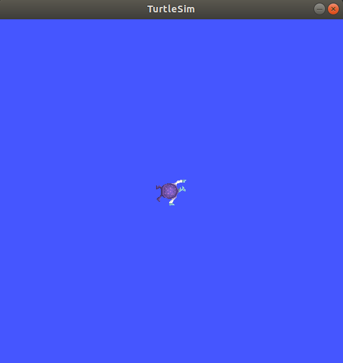
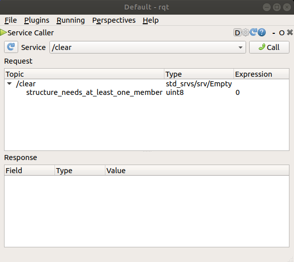
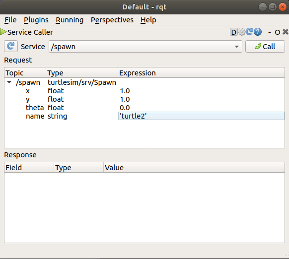
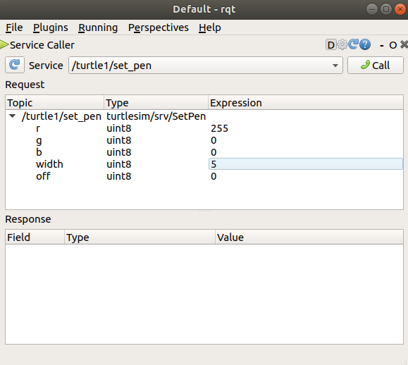
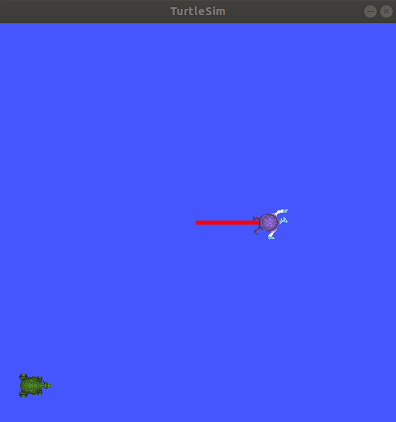
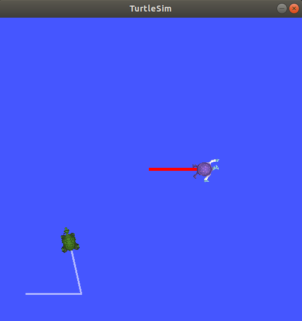

Turtlesim Installation¶
This guide walks you through installing and setting up turtlesim, a lightweight simulator for learning ROS 2 concepts.
1️⃣ Overview¶
Turtlesim is a simple 2D simulator that comes with ROS 2. It provides a visual tool for learning ROS 2 concepts such as nodes, topics, services, and actions. The turtle can be controlled through various ROS 2 commands and is perfect for understanding the basics of robot control.
2️⃣ Installation¶
Install turtlesim using apt¶
For ROS 2 Humble (or your specific ROS 2 distribution), install turtlesim with the following command:
sudo apt update
sudo apt install ros-humble-turtlesim
Note
Replace humble with your ROS 2 distribution name if you’re using a different version (e.g., foxy, galactic).
Verify Installation¶
After installation, verify that turtlesim is available:
ros2 pkg list | grep turtlesim
You should see turtlesim listed in the output.
3️⃣ Use Turtlesim¶
Start turtlesim¶
To start the turtlesim simulator, run:
source /opt/ros/humble/setup.bash
ros2 run turtlesim turtlesim_node
The simulator window should appear, with a random turtle in the center.


In the terminal, under the command, you will see messages from the node:
[INFO] [turtlesim]: Starting turtlesim with node name /turtlesim
[INFO] [turtlesim]: Spawning turtle [turtle1] at x=[5.544445], y=[5.544445], theta=[0.000000]
There you can see the default turtle’s name and the coordinates where it spawns.
Control the Turtle¶
Open a new terminal and source ROS 2 again:
source /opt/ros/humble/setup.bash
Now you will run a new node to control the turtle in the first node:
ros2 run turtlesim turtle_teleop_key
At this point you should have three windows open: a terminal running turtlesim_node, a terminal running turtle_teleop_key and the turtlesim window.
Arrange these windows so that you can see the turtlesim window, but also have the terminal running turtle_teleop_key active so that you can control the turtle in turtlesim.
Use the arrow keys on your keyboard to control the turtle. It will move around the screen, using its attached “pen” to draw the path it followed so far.
Note
Pressing an arrow key will only cause the turtle to move a short distance and then stop. This is because, realistically, you wouldn’t want a robot to continue carrying on an instruction if, for example, the operator lost the connection to the robot.
Explore ROS 2 Commands¶
You can see the nodes, and their associated topics, services, and actions, using the list subcommands of the respective commands:
ros2 node list
ros2 topic list
ros2 service list
ros2 action list
You will learn more about these concepts in the coming tutorials. Since the goal of this tutorial is only to get a general overview of turtlesim, you will use rqt to call some of the turtlesim services and interact with turtlesim_node.
4️⃣ Install rqt¶
Open a new terminal to install rqt and its plugins:
sudo apt update
sudo apt install ~nros-humble-rqt*
To run rqt:
rqt
5️⃣ Use rqt¶
When running rqt for the first time, the window will be blank. No worries; just select Plugins > Services > Service Caller from the menu bar at the top.
Note
It may take some time for rqt to locate all the plugins. If you click on Plugins but don’t see Services or any other options, you should close rqt and enter the command rqt --force-discover in your terminal.


Use the refresh button to the left of the Service dropdown list to ensure all the services of your turtlesim node are available.
Click on the Service dropdown list to see turtlesim’s services, and select the /spawn service.
Try the spawn service¶
Let’s use rqt to call the /spawn service. You can guess from its name that /spawn will create another turtle in the turtlesim window.
Give the new turtle a unique name, like turtle2, by double-clicking between the empty single quotes in the Expression column. You can see that this expression corresponds to the value of name and is of type string.
Next enter some valid coordinates at which to spawn the new turtle, like x = 1.0 and y = 1.0.


Note
If you try to spawn a new turtle with the same name as an existing turtle, like the default turtle1, you will get an error message in the terminal running turtlesim_node:
[ERROR] [turtlesim]: A turtle named [turtle1] already exists
To spawn turtle2, you then need to call the service by clicking the Call button on the upper right side of the rqt window.
If the service call was successful, you should see a new turtle (again with a random design) spawn at the coordinates you input for x and y.
If you refresh the service list in rqt, you will also see that now there are services related to the new turtle, /turtle2/..., in addition to /turtle1/....
Try the set_pen service¶
Now let’s give turtle1 a unique pen using the /set_pen service:


The values for r, g and b, which are between 0 and 255, set the color of the pen turtle1 draws with, and width sets the thickness of the line.
To have turtle1 draw with a distinct red line, change the value of r to 255, and the value of width to 5. Don’t forget to call the service after updating the values.
If you return to the terminal where turtle_teleop_key is running and press the arrow keys, you will see turtle1’s pen has changed.


You’ve probably also noticed that there’s no way to move turtle2. That’s because there is no teleop node for turtle2.
6️⃣ Remapping¶
You need a second teleop node in order to control turtle2. However, if you try to run the same command as before, you will notice that this one also controls turtle1. The way to change this behavior is by remapping the cmd_vel topic.
In a new terminal, source ROS 2, and run:
ros2 run turtlesim turtle_teleop_key --ros-args --remap turtle1/cmd_vel:=turtle2/cmd_vel
Now, you can move turtle2 when this terminal is active, and turtle1 when the other terminal running turtle_teleop_key is active.


7️⃣ Close turtlesim¶
To stop the simulation, you can enter Ctrl + C in the turtlesim_node terminal, and q in the turtle_teleop_key terminals.
Using turtlesim and rqt is a great way to learn the core concepts of ROS 2.